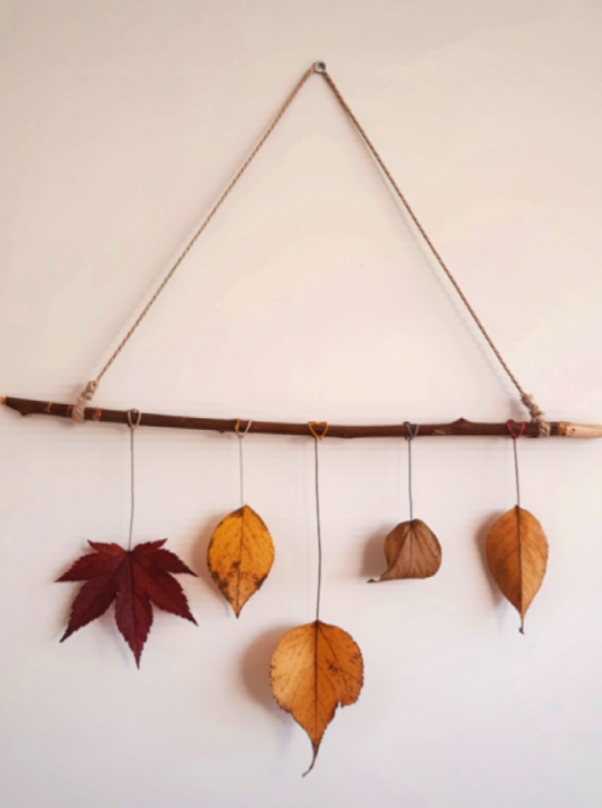

Hanging Plant Display
A simple DIY wall decoration made from a branch hung with string. Dried autumn leaves in warm tones of red, yellow, and brown are suspended from the branch, creating a seasonal, earthy display.
- 🌾 Decorative dried leaves hung on walls for a natural, earthy vibe.
- 🎨 Adds texture and rustic charm without maintenance..
- 🖼️ Can be arranged in patterns, frames, or layered for depth.
- 💡 Ideal for accent walls or above furniture pieces.